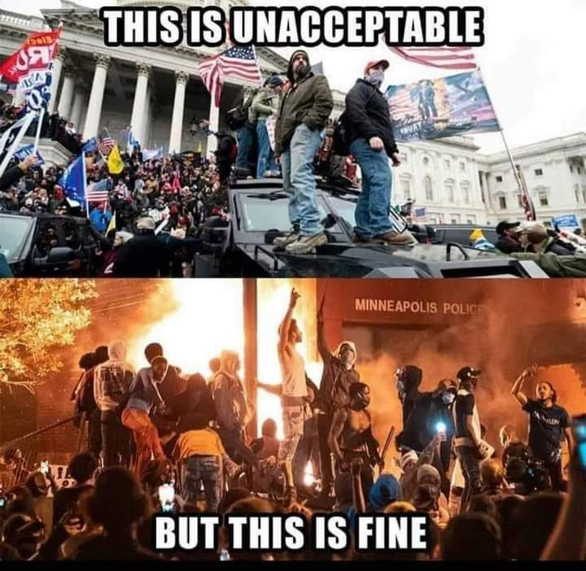
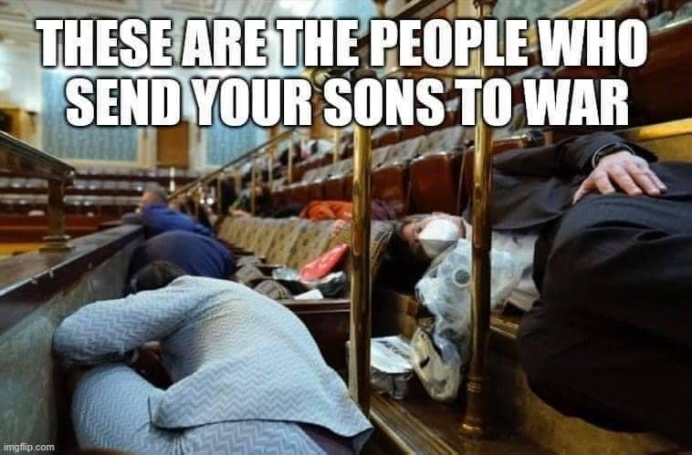

NJP Statement on Jan 6th Uprising
January 7th, 2021
Excellent statement from the National Justice Party Leadership in America on the January 6th Uprisings from the Peasants of America against a corrupt, evil, and vicious Privileged Class. In fact, the statement is so excellent that I am unable to quote it, since there is no one particular point that is any less excellent than the rest, no one word wasted. Instead, I'll just tell you that you absolutely need to click this link and go check it out for yourself.
National Justice Parties Statement on the January 6th Uprising.
If I had to summarize the main points.
- Congress is an illegitimate and hated regime.
- This was a true demonstration of the popular will, and about far more than this election.
- This was not a "riot," or "insurrection," or "domestic terror attack."
- The propagandists who spew that garbage tell us that BLM looting or Antifa Rioting are peaceful protests.
- An unarmed woman, Ashli Babbit, a 14 year Air Force Veteran, was shot by a Government Stooge as she moved from a stairwell to a hallway.
- The supporters of BLM and "All Cops are Bad," squeal with joy at the murder of this unarmed White Woman.

- "Democratic and Republican politicians, the corporate media, big-business plutocrats, left-wing celebrities and violent anarchist groups are all screeching with one voice, supporting the FBI and howling for the blood of White Americans."
- The election was rigged, but by more than this one action.
- Rigged by the censoring of popular voices on YouTube, Facebook, Twitter, and Google.
- Rigged by a corrup and illegitimate system of campaign finance, where billionaire donors determine the fat of billions.
- Rigged by mass migration, intentionally designed to destroy the political power of White People in our own countries.
- Rigged by forced integration and busing, which intentionally destroyed White Communities and White Political Power.
- Trump got backstabbed by the Republican Establishment he eagerly backstabbed us to work for.
- Trump deserted his supporters after telling them to "march on the capitol".
- Trumpism is bigger than Trump. It belongs to us. Trump was unworthy of us.
- The spirit of Shay's Rebellion, the storming of the Bastille, or the 1956 Hungarian Revolution lives through us.
- Globo Homo Schlomo was confronted with the oppressed peasants face to face, and deeply shaken by them.

TDC_ARTICLE_START
On January 6th, for a brief moment, the globalist ruling class came face to face with the anger of a disenfranchised America that has been boiling beneath the surface for decades, and it shook them to the core. January 6th showed them the roots of White America are still strong. The American people are waking up, and they are not going back to sleep under a Biden-Harris administration. In the same spirit that we at the National Justice Party scorn any allegiance to Trump or the cowardly, disgusting Republican Party, we unconditionally salute the brave demonstrators of January 6th, we grieve for the families of the patriots murdered by federal police, and we vow to honor their courage and sacrifice by continuing the political struggle for the life and freedom of our country and our people.
TDC_ARTICLE_STOP
Hail NJP